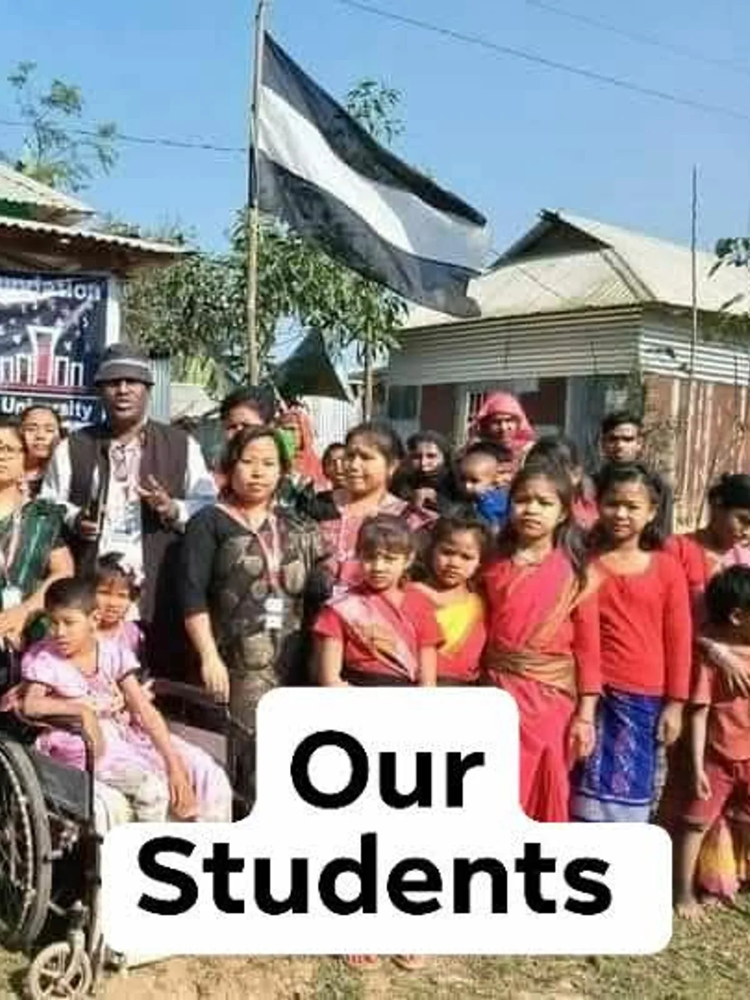
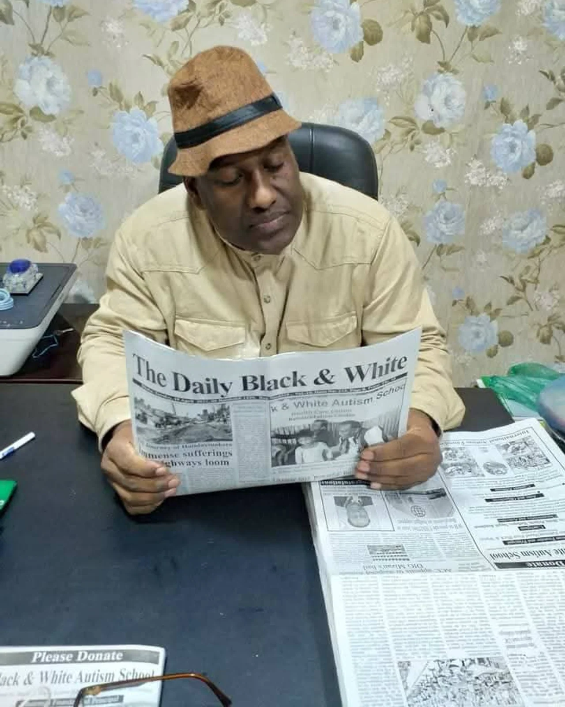
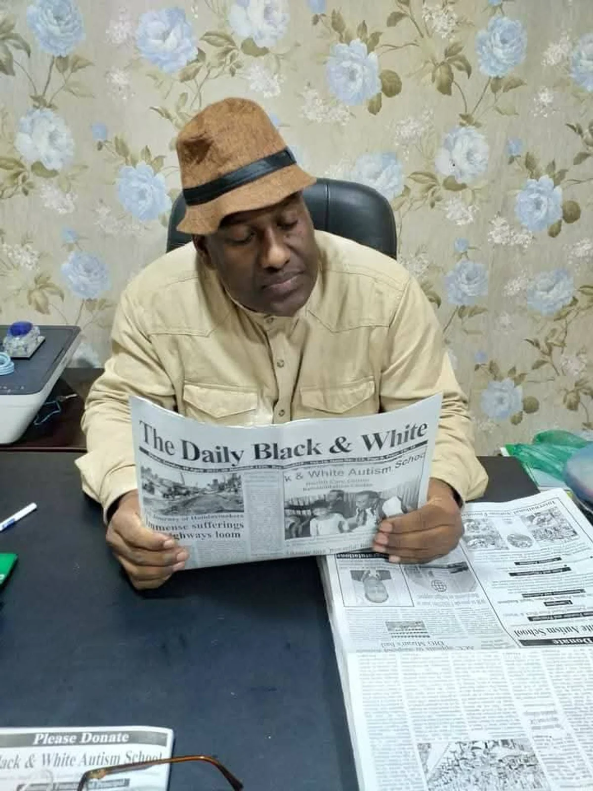
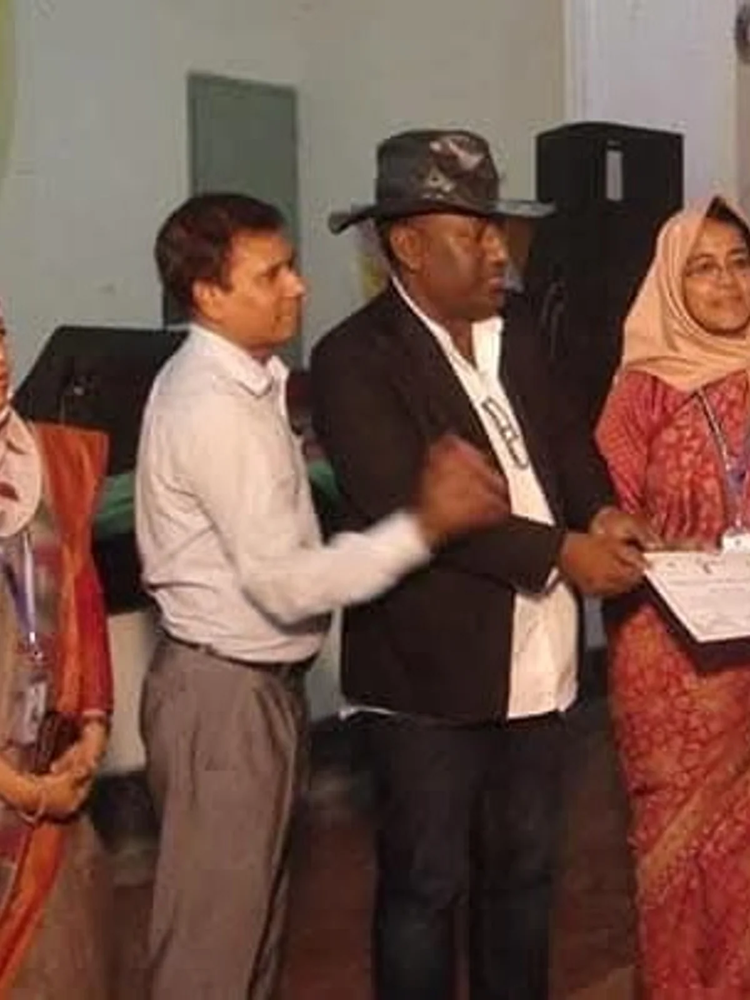
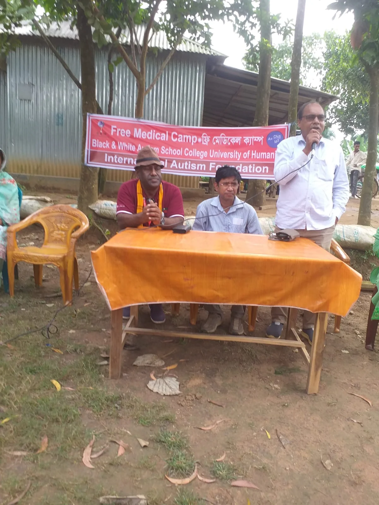

Every child is divine.
We do not say special needs. We say divine children — because their being is not a defect to correct.
Our story
Since 2013, we have carried a single, unhurried promise — to walk with divine children with autism and their mothers, in the quiet villages of Tangail and across Bangladesh.

§ 01 — Aim & Objectives
"Peace established to build our society autism-friendly — providing Special Education, Health Care and Nutrition for our Divine Children with Autism. Need your blessings and cooperation."
A society where difference is met with dignity, not fear.
Three pillars — schooling, health and nutrition — delivered without charge.
A self-sufficient autism-friendly settlement on our own land.

§ 02 — Chairman & Chief Executive
Founder, chairman and chief educationist — Masud Rana is a PhD researcher on autism who has devoted the past twelve years to the quiet work of the Foundation. He leads, teaches, and receives every family that arrives at our gate.
§ 03 — What we believe
We do not say special needs. We say divine children — because their being is not a defect to correct.
Our classrooms have no bell. Our calendar has no deadline. The child sets the pace.
Children heal in open skies, under trees, beside rivers. We teach with the land, not against it.
No corporate sponsors. No conditions. Only the quiet gifts of those who choose not to look away.
§ 04 — The journey
Read the milestones from bottom to top — the foundation is still being written.
The same devotion that would one day walk with divine children begins on a stage — Masud Rana's first public work.
Masud Rana Black & White opens the first doors of the International Autism Foundation in Madhupur.
A daily newspaper rises from the same breath as the Foundation — words and work, side by side.
A second publication joins the first, carrying stories of those the world tends to forget.
Black & White Point at 31 Sheikh Shaheb Bazar Avenue becomes our urban liaison.
A scholarly volume begins to gather what we learn from our divine children — so others, elsewhere, may learn too.
Quiet research, rooted in the jungle, begins to document how divine children heal, play and grow.
A campus of humanity inside the Madhupur jungle for divine children with autism.
The Foundation's voice reaches beyond Bangladesh — partnering, teaching, inviting the world to see.
Visiting doctors, dentists and therapists start offering free monthly care to children and mothers.
Our own produce begins feeding the school — food as medicine, grown with the children and their families.
A gathering of families, teachers and friends — the Foundation's circle widens into a forum for every hand that holds this work.
The long dream: a self-sufficient autism-friendly settlement with classrooms, clinics, farms and family housing.
§ 05 — Our people




Our divine teachers, nurses and volunteers live in and around Madhupur. Their names and faces change with the seasons; their devotion does not.
Join the work
The next chapter of the Foundation is still empty pages. Come write a line.